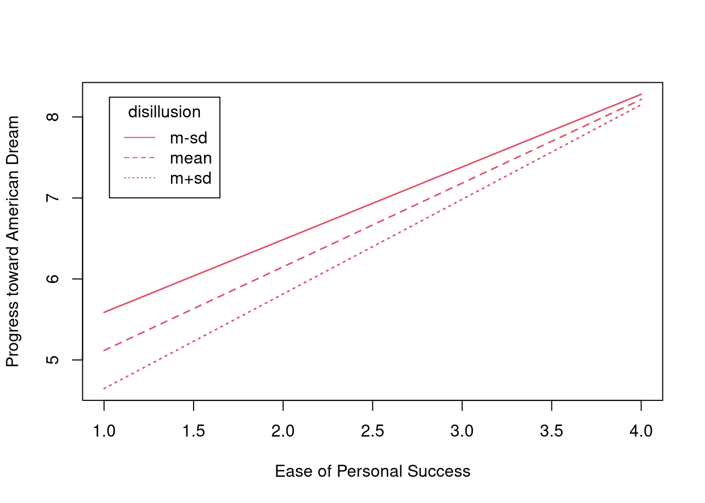

3.7 View the results:
tsOut$hypotests
NOTE: The message printed by `testSlopes()` gives the boundaries of the
*Johnson-Neyman Region of Significance* [(Johnson & Neyman, 1936)][jn].
Johnson-Neyman analysis is an alternative method of probing interactions that we
have not covered in this course. For more information, check out
[Preacher, et al. (2006)][preacher_et_al_2006].
</details>
---
We will now use **lavaan** to estimate the moderated regression model from above
as a path analysis.
---
####
Define the model syntax for the path analytic version of the model described
above.
- Parameterize the model as in the OLS regression.
- Use only observed items and scale scores.
<details>
<summary>Click to show code</summary>
```r
pathMod <- '
progress ~ 1 + lib2Con + success + disillusion + success:disillusion
'3.7.0.1
Estimate the path model on the outlook data.
Click to show code
pathFit <- sem(pathMod, data = outlook)3.7.0.2
Summarize the fitted path model and interpret the results.
- Do the results match the OLS regression results?
- What proportion of the variability in progress is explained by this model?
Hint the function lavInspect() can be used to extract information from
models
Click to show code
summary(pathFit)## lavaan 0.6.16 ended normally after 1 iteration
##
## Estimator ML
## Optimization method NLMINB
## Number of model parameters 6
##
## Number of observations 2288
##
## Model Test User Model:
##
## Test statistic 0.000
## Degrees of freedom 0
##
## Parameter Estimates:
##
## Standard errors Standard
## Information Expected
## Information saturated (h1) model Structured
##
## Regressions:
## Estimate Std.Err z-value P(>|z|)
## progress ~
## lib2Con 0.031 0.030 1.005 0.315
## success 0.424 0.258 1.640 0.101
## disillusion -0.780 0.168 -4.630 0.000
## success:dsllsn 0.174 0.073 2.399 0.016
##
## Intercepts:
## Estimate Std.Err z-value P(>|z|)
## .progress 6.811 0.620 10.985 0.000
##
## Variances:
## Estimate Std.Err z-value P(>|z|)
## .progress 4.157 0.123 33.823 0.000lavInspect(pathFit, "r2")## progress
## 0.138Click for explanation
Yes, the estimates and inferential conclusions are all the same as in the OLS regression model. The model explains 13.85% of the variability in progress.
The semTools package contains some helpful routines for probing
interactions estimated via the lavaan() function (or one of it’s wrappers).
Specifically, the probe2WayMC() and plotProbe() functions will estimate/test
simple slopes and plot the estimated simple slopes, respectively.
3.7.0.3
Probe the interaction from 3.7.0.1 using semTools utilities.
- Use
probe2WayMC()to estimate and test the simple slopes and intercepts. - Use
plotProbe()to visualize the simple slopes. - Define the simple slopes with the same conditional values of disillusion that you used in 3.4.2.7.
- Which simple slopes are significant?
- Do these results match the results from 3.4.2.7?
Click to show code
library(semTools)
## Compute simple slopes and intercepts:
ssOut <- probe2WayMC(pathFit,
nameX = c("success", "disillusion", "success:disillusion"),
nameY = "progress",
modVar = "disillusion",
valProbe = outlook %>%
summarise("m-sd" = mean(disillusion) - sd(disillusion),
mean = mean(disillusion),
"m+sd" = mean(disillusion) + sd(disillusion)
) %>%
unlist()
)
## Check the results:
ssOut## $SimpleIntcept
## disillusion est se z pvalue
## m-sd 2.719 4.690 0.231 20.271 0
## mean 3.497 4.084 0.190 21.508 0
## m+sd 4.274 3.477 0.230 15.122 0
##
## $SimpleSlope
## disillusion est se z pvalue
## m-sd 2.719 0.897 0.083 10.792 0
## mean 3.497 1.033 0.065 15.994 0
## m+sd 4.274 1.169 0.088 13.223 0## Visualize the simple slopes:
plotProbe(ssOut,
xlim = range(outlook$success),
xlab = "Ease of Personal Success",
ylab = "Progress toward American Dream",
legendArgs = list(legend = rownames(ssOut[[1]]))
)
summary(ssOut, rsquare = TRUE)## Length Class Mode
## SimpleIntcept 5 lavaan.data.frame list
## SimpleSlope 5 lavaan.data.frame listClick for explanation
Each of the simple slopes is significant. As level of disillusionment increases, the effect of success on progress also increases, and this effect is significant for all levels of disillusion considered here.
Yes, these results match the simple slopes from the OLS regression analysis.
End of In-Class Exercises 3